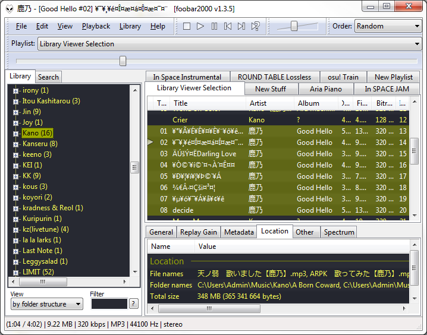

23 Jan. 2015
Hello, we meet again after a long break. I think I may have involved myself in too many things this quarter, and I'm now feeling the pretty steep backlash from everything. There's classes of course. Most of them haven't been too demanding, but I'm starting to build a backlog of work that I need to get to, and it just feels really crappy when I haven't been caught up where I need to be. In particular, I always try and do all my reading homework, even though I always hate doing reading. And when you hate doing your reading, you don't do your reading. And when you don't do your reading, you end up in the unfortunate state I'm in.
The most demanding class is probably my Capstone project. I've been making a game with about half a dozen people since last quarter, and we'll be "finishing" the game by the end of this one. The pressure is on to develop the game, and to be honest, I think we're not doing as great as I'd like it to be. We're still fumbling around getting our main game mechanics to work even though some of us have been working on it for the entire last quarter. This quarter I think even more people on the team are dedicating their time to trying to fix it up and polish it, but I'm not so sure we're making better progress. I've pretty much been working on everything but the game itself: namely UI, a bit of networking for account login, and some graphical flairs.
In better news, my newly founded osu! club has been pretty awesome so far. We have a pretty steady/active half a dozen or so members, which I'm really happy for. I may write a post more about the logistics of the club, but eh... it isn't too terribly interesting or anything, so I'll probably hold off on that. These days, I haven't been playing as much osu! as I'd like though, and I think I've definitely regressed quite a bit. At the very least, the meetings with the club keeps me somewhat in shape. Check us out on our Facebook group!
Right now, I think my main time has been dedicated to my duties in the Video Game Development Club at UCI. I'm an officer of the club, and that's added a lot of responsibilities and tasks that I've had to manage. Every week I hold a weekly art jam and art workshop for the club, the former to casually hangout with artists in the club for a few hours and the latter to teach some digital/art concepts that I'm familiar with. Very recently, I basically destroyed my entire weekend working on our winter quarter game jam. It was difficult, exhausting, but very fun and very exciting to mentor and work with a small team to make something I'm honestly very proud of. Check it out here!
I'm also been involved with a VGDC project called Autumn. Unfortunately, because of all the above, I'm pretty much putting this as low as possible on my totem pole of tasks I need to do. I still try and make the weekly meetings, but I just haven't been able to put in as much as I should or probably could into the project. In retrospect, it was a bad idea to ever do two games at once, with this and my Capstone project. Next quarter though, I'll be freed from Capstone, so I can work 1000% on making Autumn as good as I can. Some preliminary development background can be viewed here.
And last but not least! Blizzard internships! Right after writing and uploading this blog, I'll be immediately trying to finish all of my Blizzard applications. Should I be doing homework? Maybe. Should I be working on X project? Possibly, but screw it! One thing at a time, and I want to knock out Blizzard as soon as possible. I'll be applying to mostly software positions and QA. We'll see how this goes.
Alright, and let's not forget about music here. There's a ton of stuff I collected over the month, especially since Comiket 87 was around the corner, so that came along with a bunch of albums that I'm loving. And in two weeks, I'm really, really, really looking forward to the upcoming Rib album, with a new MikitoP title song.
Rib's 3rd album!
I probably won't get through everything I've picked up, but I'll try my best to talk about some of the better pickups I've enjoyed. First up, a new Majico album is coming! Yay! I've been following her for a while. I really like her voice, and I really like her MikitoP collabs both as cover and as a duo singers. I've listened to this new MikitoP song to death now since I've had MikitoP withdraw.
New MikitoP and Majico song!
XFD of new album
An older song with a really lovely duo by the two
I found a new producer, TOKOTOKO that I like. He's a little too uh, upbeat and happy go lucky, if that's the right term to use, for me, but I when I'm in the mood, I'll like his music none the less.
Song from TOKOTOKO's C87 album
Kano also released an album. I liked it upon hearing the XFD, but when I actually got it, I guess I was a little disappointed. I'm not sure, maybe I'm just not into some of the genres or the music... or that all my song names got messed up, but regardless, I think it's pretty good. Kano's has always been hit and miss for me I suppose. I'm not particularly a fan of her more cutesy stuff or cutesy stuff in general I guess.
Welp
This whoo song is probably my favorite out of the album
Next up is Chano. She has a pretty interesting background. Most of all her covered songs and albums are of 40mP songs because, if I can trust this post, she's actually married to 40mP. She has a really nice steady voice that I like listening to, and I think paired with 40mP's upbeat songs, makes an awesome combo. Unfortunately, get ready to sit through a dozen songs that pretty much sound kind of pretty much the same. So don't expect a lot of variety with her albums. The entirety of the album sounds like a pot of the same stuff throughout, which, depending on my mood, is a good and bad thing.
"Berry," title song of her C87 Berry album
Another song from her album, just stuck out to me for no particular reason
Next we'll switch over to different territory. I don't follow that much Touhou music, but I do try and keep up with a few select circles/producers in the Touhou scene. One of them in particular is ShibayanRecords. Their style changes all the time, so I don't even know what to think of them as a whole. It's always pretty much hit and miss with each album. Their new album just sounds... real funky.
Track #2
I also follow FELT to a fair degree, but man, I really don't know what to say about them. I'm just a huge disfan of bad English pronunciation, so I really struggle with liking some of their songs that I would otherwise would like without vocals.
Case in point
Finally, to top everything off, let's jump into a bit odder territory. I've been a long time follower of ELECTROCUTICA. They just produce some really interesting and, I don't even know, awesome stuff. I grow tired of them all time, but the more I listen to them, the more I like them. And now I'm revisiting their album, and I just kind of like it even more now. I don't know, it like grows on and off you at the same time.
"Contrail" from Transience